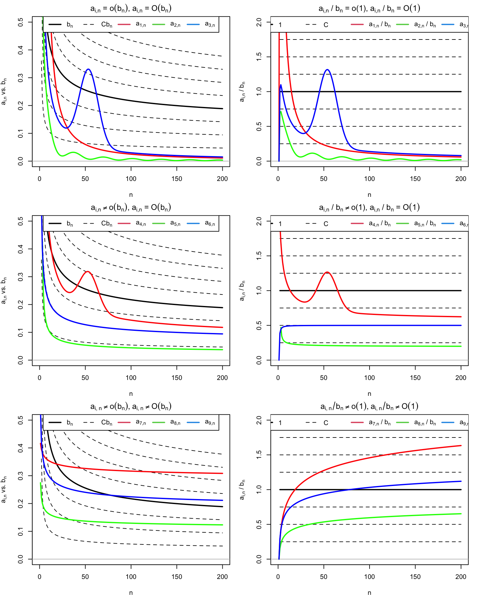
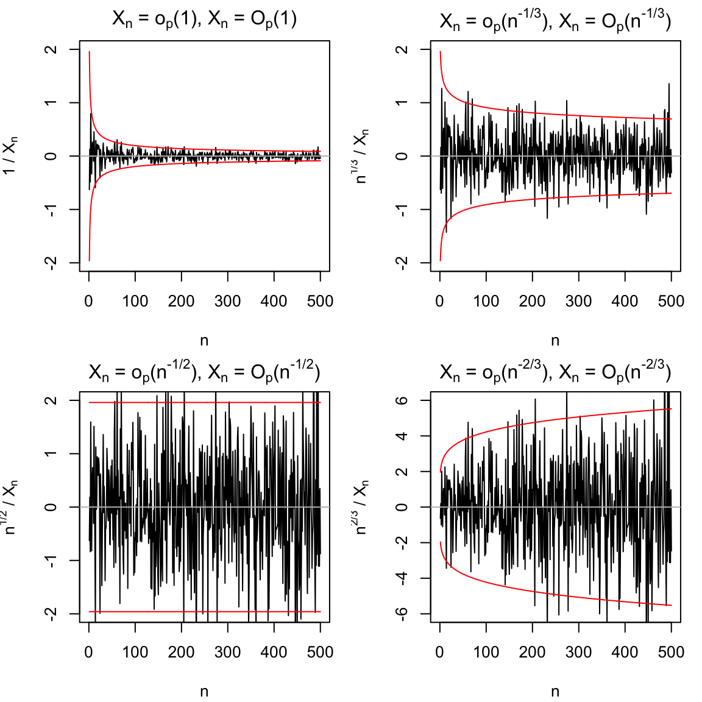

15 Order Notation
출처:
15.1 Big \(O\) and small \(o\) notation (deterministic versions)
- In mathematical analysis, \(O\)-related notation is mostly used to bound sequences that shrink to \(0\).
Definition 15.1 (Big-\(O\)) Given two strictly positive sequence \(a_n\) and \(b_n\), \[ a_n = O(b_n): \Longleftrightarrow \text{limsup}_{n\rightarrow \infty}\frac{a_n}{b_n} \leq C, \quad{} \text{for a } C>0 \] If \(a_n = O(b_n)\), then we say that \(a_n\) is big-O of \(b_n\). To indicate that \(a_n\) is bounded, we write \(a_n = O(1)\).
For a deterministic sequence \(a_n\), \(\text{limsup}_{n\rightarrow \infty}:=\lim_{n\rightarrow \infty}(\sup_{k \geq n} a_k)\) is the largest limit of the subsequences of \(a_n\). It can be defined even if \(\lim_{n\rightarrow\infty}a_n\) does not exist (e.g., in trigonometric functions). If \(\lim_{n\rightarrow\infty} a_n\) exists, as in most of the common usages of the big-\(O\) notation, then \(\text{limsup}_{n\rightarrow\infty}a_n = \lim_{n\rightarrow\infty}a_n\).
Definition 15.2 (Little-\(o\)) Given two strictly positive sequence \(a_n\) and \(b_n\), \[ a_n = o(b_n): \Longleftrightarrow \lim_{n\rightarrow\infty} \frac{a_n}{b_n} = 0. \] If \(a_n = o(b_n)\), then we say that \(a_n\) is little-o of \(b_n\). To indicate that \(a_n\rightarrow 0\), we write \(a_n = o(1)\).
Definition 15.3 (Asymptotically equivalent) (Polansky 2011) The notation \(x_n \asymp y_n\) means that \[ \lim_{n\rightarrow\infty} \frac{x_n}{y_n}=1, \] or that the two sequences are asymptotically equivalent as \(n\rightarrow\infty\).
Remark
Order notation로 asymptotic behavior를 표현하는 것은 unique하지 않다. (Polansky 2011) 예를 들어 \(a_n = O(n^{-1})\)이라고 하자. 그렇다는 것은 \(\vert n a_n \vert\)가 모든 \(n\in \mathbb{N}\)에 대해 bounded하다는 것이다. 그런데 \(|n^{1/2}a_n| \leq |na_n|\), \(\forall n\in\mathbb{N}\)이므로, \(a_n = O(n^{-1/2})\)이기도 하다.
Exercise 15.1
- \(n^{-2} =o(n^{-1})\) since \(\lim_{n\rightarrow\infty}\frac{n^{-2}}{n^{-1}}\lim_{n\rightarrow\infty}\frac{1}{n}=0\)
\(\log n = O(n)\): We want to show that \(\forall n\geq 1, \log (n) \leq n\). The proof is by indunction on \(n\). The claim is true for \(n=1\), since \(0<1\). Now suppose \(n\geq 1\) and \(\log (n) \leq n\). Since \(n+1\leq 2n\), (밑이 2인 로그를 쓴 듯) \[ \log (n+1) \leq \log (2n) = \log(n) + 1 \leq n+1 \] or \[ \log (n+1) = \log n \log (1 + \frac{1}{n}) < n + \log (1 + \frac{1}{n}) < n+1 \because \text{ since } \log 2 < 1 \]
\(n^{-1} = o((\log n)^{-1})\): 로피탈의 정리를 쓰면 \[ \lim_{n\rightarrow \infty} \frac{n^{-1}}{(\log n)^{-1}}=\lim_{n\rightarrow \infty} \frac{\log n}{n}=0 \] 임을 보일 수 있음
\(n^{-4/5} = o(n^{-2/3})\) \[ \lim_{n\rightarrow \infty} \frac{n^{-4/5}}{n^{-2/3}} = \lim_{n\rightarrow \infty} n^{2/3 - 4/5} = \lim_{n\rightarrow\infty} n^{-2/15}=0 \] 으로 알 수 있음
\(3\sin (n) = O(1)\): \(\sin\)함수는 진동함수이다.
Remark
Big-O, small-o의 정의로부터 다음을 알 수 있다.
\(a_n = O(b_n)\) means that \(a_n\) is not larger than \(b_n\) asymptotically. If \(a_n , b_n \rightarrow 0\), then it means that \(a_n\) does not decrease more slowly than \(b_n\), i.e., that \(a_n\) either decreases as fast as \(b_n\) or faster than \(b_n\).
\(a_n = o(b_n)\) means that \(a_n\) is smaller than \(b_n\) asymptotically. If \(a_n, b_n \rightarrow 0\), then it means that \(a_n\) decrease faster than \(b_n\).
위의 사실로부터, big-O는 같은 속도로 수렴하거나 더 빠른 속도로 수렴하는 두 가지 경우를 모두 포함하고 있고, small-o는 더 빠른 속도로 수렴하는 경우만 포함하기 때문에 어떤 \(C>0\)에 대해 little-o implies big-O라고 할 수 있다.
다음은 (García-Portugués 2024)에 적혀 있는 big-O, small-o에 대한 몇 가지 성질들이다.
Proposition 15.1 Consider two strictly positive sequences \(a_n, b_n \rightarrow 0\). The following properties hold (García-Portugués 2024):
\(kO(a_n) = O(a_n)\), \(ko(a_n) = o(a_n)\), \(k\mathbb{R}\).
\(o(a_n) + o(b_n) = o(a_n + b_n)\), \(O(a_n) + O(b_n) = O(a_n + b_n)\).
\(o(a_n)o(b_n) = o(a_nb_n)\), \(O(a_n)O(b_n) = O(a_nb_n)\).
\(o(a_n) + O(b_n) = O(a_n + b_n)\), \(o(a_n)O(b_n) = o(a_nb_n)\).
\(o(1)O(a_n) = o(a_n)\).
\(a_n^r = o(a_n^s)\), for \(r>s\geq 0\).
\(a_nb_n =o(a_n^2 +b_n^2)\) (아마 \(O(a_n^2 + b_n^2)\)이 되어야 할 듯)
\((a_n + b_n)^k = O(a_n^k + b_n^k)\).
| Sequence | Result |
|---|---|
| \(b_n = 1/\log (n)\) | |
| \(a_{1,n}=\frac{2}{n}+\frac{50}{n^2}\) | \(o(b_n)\) (hence also \(O(b_n)\)) |
| \(a_{2,n}=\frac{\sin (n/5)+2}{n^{5/4}}\) | \(o(b_n)\) (hence also \(O(b_n)\)) |
| \(a_{3,n}=\frac{3(1+5\exp(-(n-55.5)^2/200))}{n}\) | \(o(b_n)\) (hence also \(O(b_n)\)) |
| \(a_{4,n}=\frac{n+3}{4n\log_{10}(n)}+\frac{a_{3,n}}{2}\) | \(O(b_n)\), but not \(o(b_n)\) |
| \(a_{5,n}=\frac{1}{4\log_{2} (\frac{n}{2})}\) | \(O(b_n)\), but not \(o(b_n)\) |
| \(a_{6,n}=\frac{1}{\log (n^2+n)}\) | \(O(b_n)\), but not \(o(b_n)\) |
| \(a_{7,n}=\frac{1}{2\log(5n+3)^{1/4}}\) | not \(O(b_n)\) (hence neither \(o(b_n)\)) |
| \(a_{8,n}=\frac{1}{4\log(\log (10n+2))}\) | not \(O(b_n)\) (hence neither \(o(b_n)\)) |
| \(a_{9,n}=\frac{1}{2\log(\log (n^2+10n+2))}\) | not \(O(b_n)\) (hence neither \(o(b_n)\)) |
Remark
- 오른쪽의 그림들을 보면 수렴에 대해 파악할 수 있음
- 위: \(\frac{a_{i,n}}{b_{n}}\)이 \(n\rightarrow \infty\)일 때 0으로 수렴, 따라서 \(\frac{a_{i,n}}{b_{n}}=\mathcal{o}(1)\) 이고 \(\frac{a_{i,n}}{b_{n}}=\mathcal{O}(1)\)임
- 가운데: \(\frac{a_{i,n}}{b_{n}}\)이 \(n\rightarrow \infty\)일 때 0이 아닌 어떤 값으로 수렴하는 것처럼 보임, 따라서 \(\frac{a_{i,n}}{b_{n}}\neq\mathcal{o}(1)\) 이나 \(\frac{a_{i,n}}{b_{n}}=\mathcal{O}(1)\)임
- 아래: \(\frac{a_{i,n}}{b_{n}}\)이 \(n\rightarrow \infty\)일 때 발산하는 것으로 보이며 따라서 \(\frac{a_{i,n}}{b_{n}}\neq\mathcal{o}(1)\) 이고 \(\frac{a_{i,n}}{b_{n}}\neq\mathcal{O}(1)\)임
다음은 (García-Portugués 2024)가 소개한 \(C_p\) inequality이다.
Lemma 15.1 (\(C_p\) inequality) Given \(a,b\in \mathbb{R}\) and \(p>0\), \[ |a+b|^p \leq C_p (|a|^p + |b|^p), \quad{} C_p= \begin{cases} 1, & p\leq 1\\ 2^{p-1}, & p >1. \end{cases} \]
다음으로 생각해 볼 만한 것은 \(n\rightarrow\infty\)일 때 \(O(n^{-1/2})\)와 \(O(n^{-1})\)처럼 차수가 다른 수열의 수렴에 대한 비교이다.
Theorem 15.1 ((Polansky 2011 의 thm 1.19)) Consider two sequences \(\{a_n\}_{n=1}^{\infty}\) and \(\{b_n\}_{n=1}^{\infty}\) and positive real numbers \(k\) and \(m\) where \(k \leq m\). Then
If \(a_n = o(n^{-k})\) and \(b_n = o(n^{-m})\) as \(n\rightarrow \infty\), then \(a_n + b_n = o(n^{-k})\) as \(n\rightarrow \infty\).
If \(a_n = O(n^{-k})\) and \(b_n = O(n^{-m})\) as \(n\rightarrow \infty\), then \(a_n + b_n = O(n^{-k})\) as \(n\rightarrow \infty\).
If \(a_n = O(n^{-k})\) and \(b_n = o(n^{-m})\) as \(n\rightarrow \infty\), then \(a_n + b_n = O(n^{-k})\) as \(n\rightarrow \infty\).
If \(a_n = o(n^{-k})\) and \(b_n = O(n^{-m})\) as \(n\rightarrow \infty\), then \(a_n + b_n = O(n^{-k})\) as \(n\rightarrow \infty\).
15.1.1 Big-\(\mathcal{O}\)의 적분
Big-\(\mathcal{O}\)의 정의를 다시 생각해보자. \[ f(x) =\mathcal{O}(g(x)) \Longleftrightarrow \exists M, c \quad{}\text{ s.t. }\quad{}\forall x > c, \quad{} |f(x)| \leq M |g(x)| \] 따라서 \(a<c<b\)에 대해 \[ \Big\vert \int_a^b f(x) dx \Big\vert \leq \int_a^b \Big\vert f(x)\Big\vert dx \leq \int_a^c \Big\vert f(x)\Big\vert dx + M \int_c^{b} |g(x)| dx \]
Example 15.1
- 함수가 \[
f(x) = \mathcal{O}(x^{\alpha})
\] 라고 하자. 그러면
- \(\alpha <-1\)일 때에는 \(\int_0^x f(y)dy =\mathcal{O}(1)\)이라고 말할 수 있는 것이 최선
- \(\alpha >-1\)일 때에는 \(\int_0^x f(y)dy =\mathcal{O}(x^{\alpha + 1})\)인데 \[ \int_0^c |f(y)|dy = \mathcal{O}(1) \] 이고 \(\alpha \neq -1\)일 때에는 \[ \int_c^x |f(y)|dy \leq M \int_c^x y^\alpha dy =\frac{M}{\alpha+1}(x^{\alpha+1}-c^{\alpha+1}) = \mathcal{O}(x^{\alpha + 1}) + \mathcal{O}(1) \]
15.1.2 Big-\(\mathcal{O}\)의 미분
안타깝게도 big-\(\mathcal{O}\)의 미분에 대해서는 estimate를 얻을 수 없다. 즉 \(f(x) = \mathcal{O}(g(x))\)라고 해서 \(f'(x) =\mathcal{O}(g'(x))\)를 만족하지는 않는다는 것이다.
예를 들어 \(f(x) = \mathcal{O}(g(x))\)이고 \(h(x) = \sin (x^n) f(x)\)라고 하자. 그러면 \(h(x) = \mathcal{O}(g(x))\)이다. 그러나 \(h'(x) = \mathcal{O}(x^{n-1}g(x)) + O(f'(x))\)이므로, 첫 번째 항이 \(f'(x)\)보다 빨리 grow할 것이라고 짐작할 수 있다.
15.2 Stochastic versions
Definition 15.4 (Little-\(o_p\)) Given a strictly positive sequence \(a_n\) and a sequence of random variable \(X_n\), \[\begin{align*} X_n = o_P (a_n): &\Longleftrightarrow \frac{|X_n|}{a_n}\stackrel{P}{\rightarrow}0\\ &\Longleftrightarrow\lim_{n\rightarrow\infty}P\Big[ \frac{|X_n|}{a_n}>\varepsilon \Big] =0, \quad{} \forall \varepsilon >0. \end{align*}\] If \(X_n = o_p (a_n)\), then we say that \(X_n\) is little-\(o_p\) of \(a_n\). To indicate that \(X_n \stackrel{P}{\rightarrow}0\), we write \(X_n = o_p(1)\).
Example 15.2 Let \(Y_n = o_p (n^{-1/2})\) and \(Z_n = o_p(n^{-1})\). Then \(Z_n\) converges faster to zero in probability than \(Y_n\). To visualize this, recall that \(X_n = o_p(a_n)\) and that limit definitions entail that \[ \forall \varepsilon, \delta >0, \exists n_0 = n_0 (\varepsilon, \delta)\in \mathbb{N}: \forall n \geq n_0(\varepsilon, \delta), \quad{} P[|X_n|>a_n\varepsilon]<\delta. \] Therefore, for fixed \(\varepsilon, \delta>0\) and a fixed \(n\geq \max (n_{0,Y}, n_{0,Z})\), then \(P[Y_n \in (-n^{-1/2}\varepsilon, n^{-1/2}\varepsilon)]>1-\delta\) and \(P[Z_n \in (-n^{-1}\varepsilon, n^{-1}\varepsilon)]>1-\delta\), but the latter interval is much shorter, hence \(Z_n\) is forced to be more tightly concentrated about \(0\).
Remark
Little-\(o_p\) allows us to easily quantify the speed at which a sequence of random variables converges to zero in probability.
Big \(O_p\) allows us to bound a sequence of random variables in probability, in the sense that we can state that the probability of being above an arbitrarily large threshold \(C\) converges to zero.
As with its deterministic versions \(o\) and \(O\), a little-\(o_p\) is more restrictive than a big-\(O_p\), and the former implies the latter.
Definition 15.5 (Big-\(o_p\)) Given a strictly positive sequence \(a_n\) and a sequence of random variable \(X_n\), \[\begin{align*} X_n = O_P (a_n): \Longleftrightarrow& \forall \varepsilon>0, \exists C_{\varepsilon}>0, n_0(\varepsilon) \in \mathbb{N}:\\ &\forall n \geq n_0 (\varepsilon), P \Big[\frac{|X_n|}{a_n} > C_{\varepsilon} \Big] < \varepsilon\\ \Longleftrightarrow &\lim_{C\rightarrow\infty}\text{limsup}_{n\rightarrow\infty} P\Big[\frac{|X_n|}{a_n} >C \Big]=0. \end{align*}\] If \(X_n = O_p(a_n)\), then we say that \(X_n\) is big-\(O_p\) of \(a_n\).
Example 15.3 Chebyshev inequality entails that \(P[|X_n - E[X_n]|\geq t]\leq \text{Var}[X_n]/t^2\), \(\forall t>0\). Setting \(\varepsilon :=\text{Var}[X_n]/t^2\) and \(C_{\varepsilon}:=1/\sqrt{\varepsilon}\), then \(P\Big[ |X_n - E[X_n]|\geq \sqrt{\text{Var}[X_n]}C_{\varepsilon} \Big] \leq \varepsilon\). Therefore, \[ X_n - E[X_n] = O_p (\sqrt{\text{Var}[X_n]}). \] This is a very useful result, as it gives an efficient way of deriving the big-\(O_p\) form of a sequence of random variables \(X_n\) with finite variances.
An application of Example 15.3 shows that \(X_n = O_p (n^{-1/2})\) for \(X_n \stackrel{d}{=}\mathcal{N}(0,1/n)\). The nature of this statement and its relation with little-\(o_p\) is visualized, which shows a particular realization \(X_n(\omega)\) of the sequence of random variables.

Exercise 15.2 It is actually true that:
\(X_n \stackrel{P}{\rightarrow}0\).
\(n^{1/3}X_n \stackrel{P}{\rightarrow} 0\).
\(n^{1/2}X_n \stackrel{P}{\rightarrow} \mathcal{N}(0,1)\).
다음은 (Jiang 2022) 에 나와있는 정리다.
Theorem 15.2 (\(O_p(1)\)이기 위한 충분조건) 다음 세 가지 조건 중 하나를 만족하면 \(X_n = O_p(1)\)이다.
There is \(p>0\) such that \(E(|X_n|^p), n\geq 1\) is bounded.
\(X_n\stackrel{p}{\rightarrow}X\) as \(n\rightarrow\infty\) for some random variable \(X\).
\(X_n \stackrel{d}{\rightarrow}X\) as \(n\rightarrow\infty\) for some random variable \(X\). (Polansky (2011) 의 theorem 8.1)
Proof
1번이 성립한다고 하자. \(\varepsilon>0\)에 대해 Chebyshev 부등식을 쓰면 \[ \begin{align*} P(|X_n|>M) &= P(|X_n|^p > M^p)\\ &\leq \frac{E(|X_n|^p)}{M^p} \leq \frac{c}{M^p}, \end{align*} \] where \(c= \sup_{n\geq 1}E(|X_n|^p)<\infty\). Thus, if we choose \(M\) such that \(M>(c/\varepsilon)^{1/p}\), we have \(P(|X_n|>M)<\varepsilon\). Hence, \(P(|X_n|\leq M) > 1-\varepsilon\) for any \(n\geq 1\).
3번 관련 StackExchange 참고
다음은 big-\(O_p\) 및 little-\(o_p\)에 관한 성질들이다.
Proposition 15.2 Consider two strictly positive sequences \(a_n, b_n \rightarrow 0\). The following properties hold (García-Portugués 2024) :
\(o_p(a_n) = O_p(a_n)\) (little-\(o_p\) implies big-\(O_p\))
\(o(1) = o_p(1)\), \(O(1) = O_p(1)\) (deterministic implies probabilistic)
\(kO_p(a_n) = O_p(a_n)\), \(k o_p(a_n) = o_p (a_n), k\in \mathbb{R}\).
\(o_p(a_n) + o_p(b_n) = o_p(a_n + b_n)\), \(O_p(a_n) + O_p(b_n) = O_p(a_n + b_n)\).
\(o_p(a_n)o_p(b_n) = o_p(a_n b_n)\), \(O_p(a_n)O_p(b_n) = O_p(a_n b_n)\) .
\(o_p(a_n) + O_p(b_n) = O_p(a_n + b_n)\), \(o_p(a_n)O_p(b_n)=o_p(a_n b_n)\).
\(o_p(1) O_p(a_n) = o_p (a_n)\).
\((1+o_p(1))^{-1} = O_p(1)\).
Example 15.4 위 proposition의 2, 4번을 이용하면 Example 15.3 에 다음과 같은 표현이 가능하다. \[ \begin{align*} X_n &= O(E[X_n]) + O_p (\sqrt{\text{var}[X_n]})\\ &= O_p(E[X_n] + \sqrt{\text{var}[X_n]}). \end{align*} \]
Polansky (2011) 의 theorem 8.3에서는 big-O, small-o, big-\(O_p\), small-\(o_p\)에 대한 모든 곱의 상황을 정리해 놓았다.
Theorem 15.3 Let \(\{X_n\}_{n=1}^{\infty}\) and \(\{Y_n \}_{n=1}^{\infty}\) be sequences of random variables and let \(\{y_n\}_{n=1}^{\infty}\) be a sequence of real numbers.
If \(X_n = O_p (n^{-a})\) and \(Y_n = O_p(n^{-b})\) as \(n\rightarrow\infty\), then \(X_n Y_n = O_p(n^{-(a+b)})\) as \(n\rightarrow\infty\).
If \(X_n = O_p (n^{-a})\) and \(Y_n = o(n^{-b})\) as \(n\rightarrow\infty\), then \(X_n y_n = o_p(n^{-(a+b)})\) as \(n\rightarrow\infty\).
If \(X_n = O_p (n^{-a})\) and \(Y_n = o_p(n^{-b})\) as \(n\rightarrow\infty\), then \(X_n Y_n = o_p(n^{-(a+b)})\) as \(n\rightarrow\infty\).
If \(X_n = o_p (n^{-a})\) and \(y_n = o(n^{-b})\) as \(n\rightarrow\infty\), then \(X_n y_n = o_p(n^{-(a+b)})\) as \(n\rightarrow\infty\).
If \(X_n = O_p (n^{-a})\) and \(y_n = O(n^{-b})\) as \(n\rightarrow\infty\), then \(X_n y_n = O_p(n^{-(a+b)})\) as \(n\rightarrow\infty\).
If \(X_n = o_p (n^{-a})\) and \(y_n = O(n^{-b})\) as \(n\rightarrow\infty\), then \(X_n y_n = o_p(n^{-(a+b)})\) as \(n\rightarrow\infty\).
If \(X_n = o_p (n^{-a})\) and \(Y_n = o_p(n^{-b})\) as \(n\rightarrow\infty\), then \(X_n Y_n = o_p(n^{-(a+b)})\) as \(n\rightarrow\infty\).
다음은 Richard Lockhart 교수님의 강의노트 나 Shumway and Stoffer (2017) 의 appendix A에서 알 수 있는 big-O, small-o, big-\(O_p\), small-\(o_p\) 덧셈 관련 내용이다.
Theorem 15.4 \(a_n>0\), \(b_n>0\)
\(O(a_n) + O(b_n) = O(\max \{a_n ,b_n\})\)
\(o(a_n) + o(b_n) = o(\max \{a_n ,b_n\})\)
\(O_p(a_n) + O_p(b_n) = O_p(\max \{a_n ,b_n\})\)
\(o_p(a_n) + o_p(b_n) = o_p(\max \{a_n ,b_n\})\)
\(o(O(a_n)) = o(a_n)\)
\(o(a_n) + O(b_n) = O(\max \{a_n ,b_n\})\)
\(o_p(a_n) + O_p(b_n) = O_p(\max \{a_n ,b_n\})\)
You can’t cancel because each new occurence of \(O\) is different \[ O(a_n) - O(a_n) \neq 0, \] only add and multiply and use positive rates.